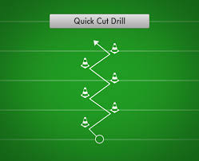
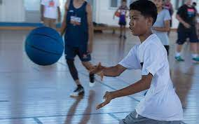
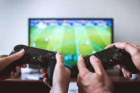

On the surface, gaming and sports may seem unrelated. But modern research reveals some striking ways that video games can improve vital skills and abilities that translate directly into athletic performance. From enhanced reflexes to improved teamwork, gaming can give aspiring athletes a competitive edge. Let’s examine how moderate gameplay can help you excel in your sport.
Elite athletes must master multitasking, tracking numerous factors like the ball, other players, time, and physical space while making split-second decisions. This skill is akin to a muscle; it improves with training, and video games provide a perfect training ground. 
Studies show that gamers display a more coordinated activity in their visual, attentional, and motor areas, aiding them in juggling the many simultaneous elements of sports for an optimal response.
Top-level sports demand making dozens of tight judgment calls under extreme pressure. Playing Video games gradually condition resilient decision-making skills among athletes by providing low-risk environments to take strategic risks and experiment. 
FMRI scans demonstrate enhanced activity in regions linked to decision-making among regular gamers. Repeatedly assessing options and strategizing in-game usually transfers to quick strategic thinking on the court or field.
Athletes benefit significantly from processing visual stimuli and making split-second decisions quickly. Video games naturally enhance this information processing speed as they demand fast mental calculations within chaotic gaming scenarios. 
While elite sports performance stems from innate talent and tireless training, video games offer athletes an engaging and convenient training supplement. An hour a day playing fast-paced titles that exercise the skills above can provide a real edge over competitors.
One game that helps with all these abilitys is NBA2K24. It is currently the biggest basketball game in the word and millions if not BILLIONS have played or are currently playing. Click HERE for current day 2K Tips
Source:https://athleticsweekly.com/aw-promotion/10-ways-how-video-games-can-make-you-a-better-athlete